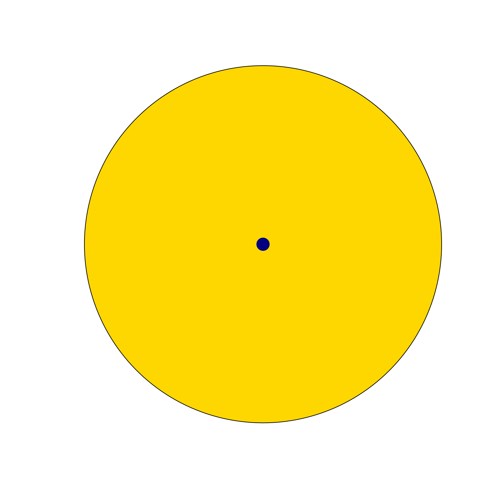
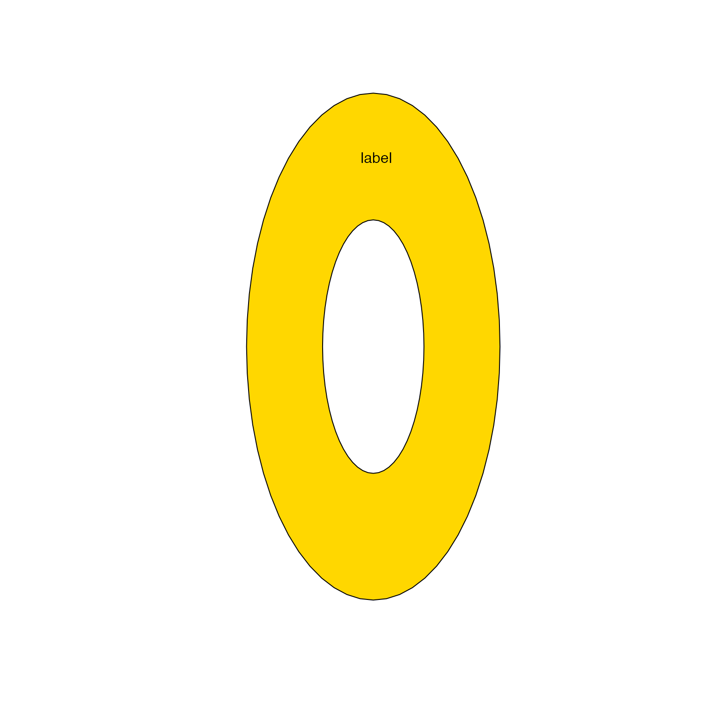

Get SpatialPolygons polylabelr coordinate
sp_polylabelr(sp, apply_holes = TRUE, ...)sp::SpatialPolygons object
logical indicating whether to apply any
polygon holes when present in sp.
additional arguments are ignored
list with items x with x coordinate, y with
y coordinate, and dist with distance to the enclosing
polygon.
This function is a simple wrapper function around
polylabelr::poi() for sp::SpatialPolygons input.
This function does two things:
It finds the largest polygon in the sp::SpatialPolygons
input, which may contain multiple disconnected polygons.
It applies "holes" inside the polygon when present, to prevent the label from being chosen inside the hole.
Other venndir label:
draw_gridtext_groups(),
polygon_label_fill(),
polygon_label_outside(),
polygon_label_segment()
setlist <- list(A=letters, B=sample(letters, 4));
vo <- venndir(setlist, proportional=TRUE, do_plot=FALSE);
sp <- vo$venn_spdf[1,];
plot(sp, col="gold")
xy <- sp_polylabelr(sp);
points(xy, pch=20, cex=4, col="navy")

# example with a hole inside
sp <- sp_ellipses(xcenter=1, ycenter=1, xradius=0.5, yradius=1);
sp_hole <- sp_ellipses(xcenter=1, ycenter=1, xradius=0.2, yradius=0.5);
sp_donut <- rgeos::gDifference(sp, sp_hole);
plot(sp_donut, col="gold")
spt <- sp_polylabelr(sp_donut);
text(x=spt$x, y=spt$y, add=TRUE, labels="label")
